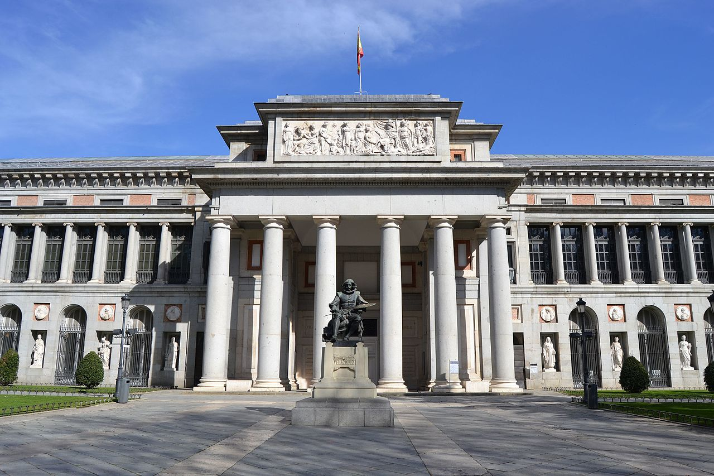
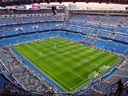

Sitios Turísticos de Madrid
| NOMBRE | DESCRIPCIÓN | IMAGEN |
|---|
| Museo Nacional del Prado |
Es uno de los museos más importantes del mundo y uno de los más visitados.Contiene muchos cuadros del siglo XVI a XIX, entre las principales obras de arte que se encuentran obras de Velazquez, El Grecoc, Goya, Tiziano, Rubens y El Bosco. |
 |
| Parque El Retiro |
es un jardín histórico y parque público situado en Madrid. Considerado como una de las principales atracciones turísticas de la ciudad, alberga numerosos conjuntos arquitectónicos, escultóricos y paisajísticos de los siglos XVII a XXI, entre los que destacan el Monumento a Alfonso XII, el Palacio de Cristal, el Estanque Grande, el Parterre, la Puerta de Felipe IV, el Real Observatorio Astronómico y la fuente de la Alcachofa. |
|
| Palacio Real Madrid |
El Palacio Real de Madrid es la residencia oficial del rey de España; no obstante, los actuales reyes no habitan en él, sino en el Palacio de la Zarzuela, por lo que es utilizado para ceremonias de Estado y actos solemnes. Con una extensión de 199 000 m² y 3418 habitaciones, casi el doble que el Palacio de Buckingham o el Palacio de Versalles), es el palacio real más grande de Europa Occidental, y uno de los más grandes del mundo. |
|
| Estadio Santiago Bernabeu |
El Estadio Santiago Bernabéu es un recinto deportivo propiedad del Real Madrid Club de Fútbol, situado en pleno paseo de la Castellana, en el distrito de Chamartín de Madrid, España. Se inauguró el 14 de diciembre de 1947 y su aforo actualmente es de 81 044 espectadores. |
 |
Fuente:https://www.disfrutamadrid.com/que-ver